intent.md는 어떤 파일인가요
intent.md는 기능 하나를 만들기 전에 그 기능을 왜 만드는지를 적어 두는 마크다운 파일이에요. 규칙을 적는 CLAUDE.md와는 성격이 완전히 달라요. 개발 생명 주기의 첫 단계인 계획 단계가 끝나면 남는 결과물이 바로 이 파일이에요.
발표자는 Anthropic 블로그의 원문부터 보여 줘요. 'Capture as intent.md' 단락은 이 파일이 세 갈래로 들어온다고 설명해요. 누군가 아이디어를 냈을 때, 티켓이 등록됐을 때, 운영 중 알림이 울렸을 때예요.
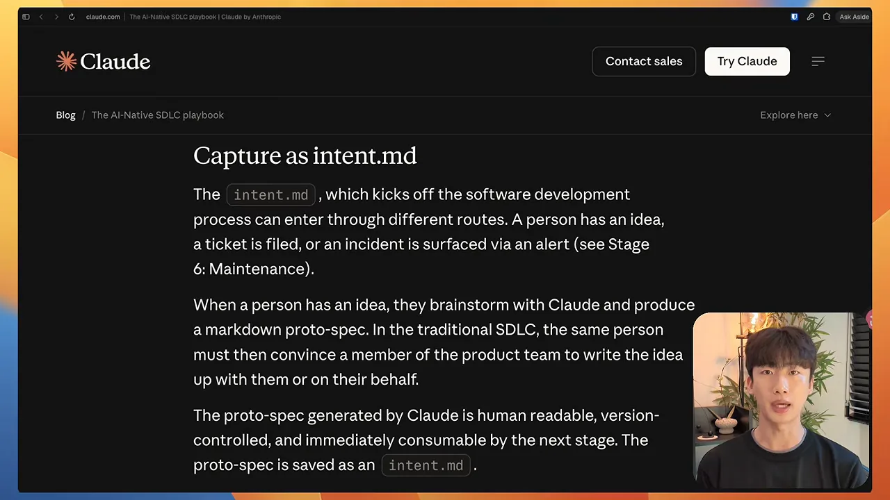
다섯 칸 템플릿
Anthropic이 제안한 틀은 다섯 칸이에요. 왼쪽 상자 위에서부터 Problem(누가 어떤 문제를 겪나), Proposed outcome(해결되면 무엇이 달라지나), Affected users and systems(어떤 사용자·시스템이 영향을 받나), Constraints(지켜야 할 제약), Open questions(아직 답하지 못한 질문)예요. 오른쪽 세 줄이 이 다섯 칸을 한마디로 줄인 말이에요. 무엇을 원하는지, 왜 원하는지, 어떤 제약 아래서인지예요.
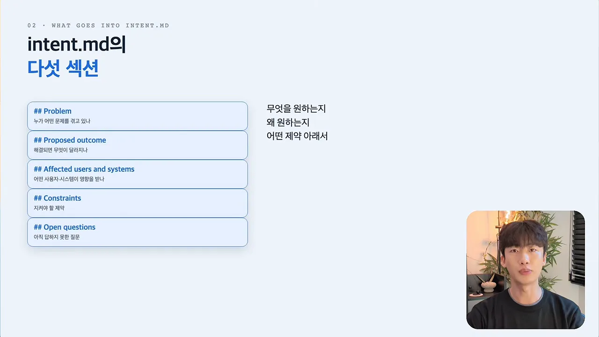
어디에 두나요
가장 단순한 위치는 제품 레포 안의 intent/ 폴더예요. 화면의 트리처럼 my-project/ 아래 src/ 옆에 intent/를 두고, 기능마다 ship-tracking/intent.md, weekly-report/intent.md처럼 쌓아요. 코드처럼 커밋해서 버전 관리를 해요. 화살표 메모처럼 Anthropic의 제안은 이 폴더까지예요.
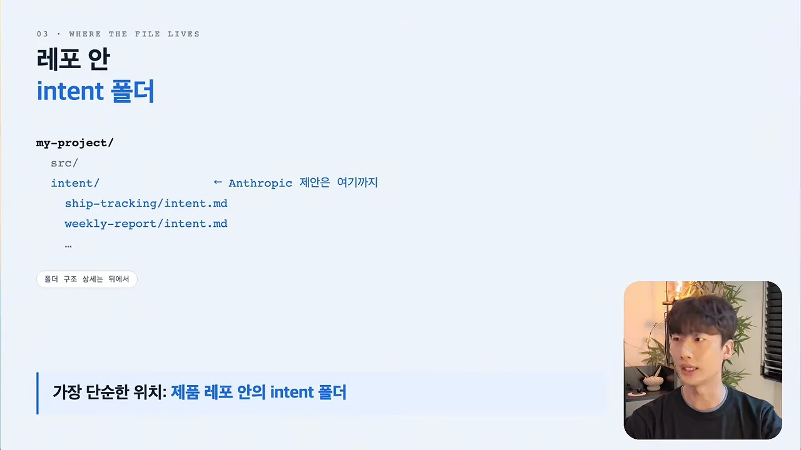
오해하기 쉬운 두 가지
왼쪽 빨간 상자 두 개가 발표자가 먼저 짚는 오해예요. 첫째, intent.md는 Claude Code가 알아서 읽는 파일이 아니에요. 오른쪽 상자처럼 CLAUDE.md나 AGENTS.md에 'intent.md를 읽어라'라고 따로 적어야 해요. 둘째, 정해진 포맷이 없어요. 다섯 칸은 권장안일 뿐 업계 표준은 아니에요.
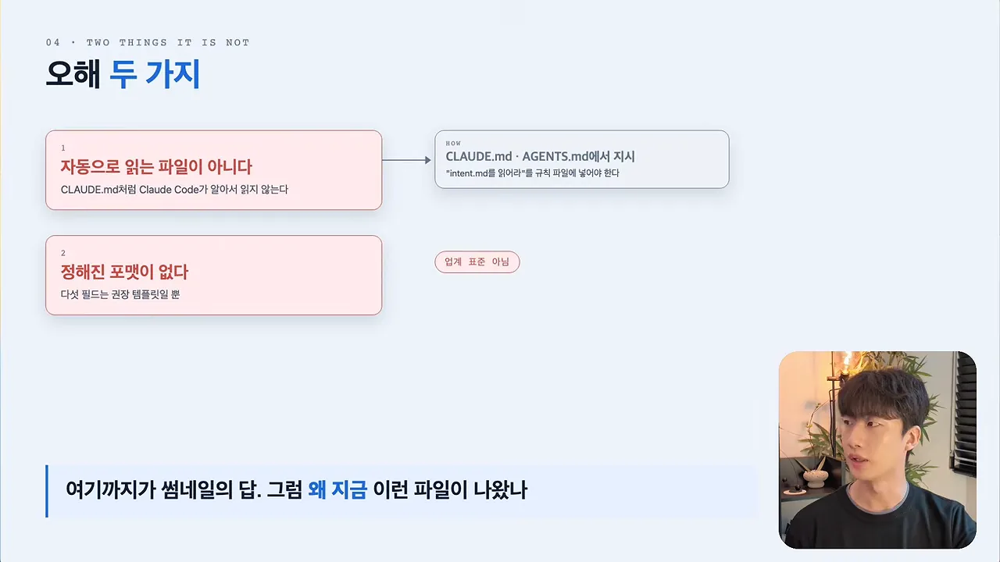
왜 지금 이런 파일이 나왔나요
SDLC(Software Development Life Cycle)는 우리가 낸 아이디어가 실제 서비스가 되기까지의 전 과정이에요. 보통 계획, 설계, 빌드, 테스트, 배포, 운영 여섯 단계로 나눠요. 문제는 단계마다 담당자가 다르고, 기획 문서나 티켓, 담당자의 컨펌이 있어야 다음 단계로 넘어간다는 점이에요. 코드는 빨리 쓰게 됐지만 계획 승인, 코드 리뷰, 팀원 간 핸드오프는 그대로라서, 개발 전체의 병목은 코드 작성이 아닌 다른 곳으로 옮겨 갔어요.
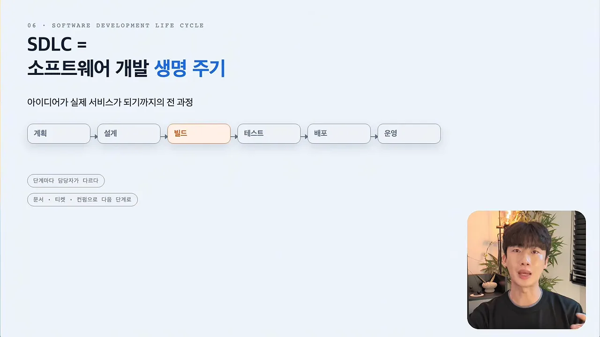
빌드만 줄고 앞뒤는 그대로예요
옛 SDLC는 코드를 쓰는 단계가 가장 오래 걸리고 가장 비싸던 시절에, 그 단계를 효율적으로 돌리려고 만든 절차예요. PRD(Product Requirements Document), 스프린트 플래닝, 보안 리뷰는 몇 주·몇 달 이어질 개발의 방향을 미리 맞추려는 일이었어요. 그런데 그 전제가 사라졌어요.
슬라이드 위 줄('BEFORE')은 빌드 칸이 '몇 달'로 가장 넓어요. 아래 줄('WITH AGENTS')에서는 빌드가 '몇 시간'짜리 좁은 칸으로 줄고, 오른쪽에 '빌드에서 번 시간'이 점선으로 남아요. 그런데 나머지 칸은 여전히 '주' 단위예요. 맨 아래 'STILL HUMAN' 줄의 요구사항 검토, 코드 리뷰, 릴리스를 아직 사람이 하기 때문이에요.
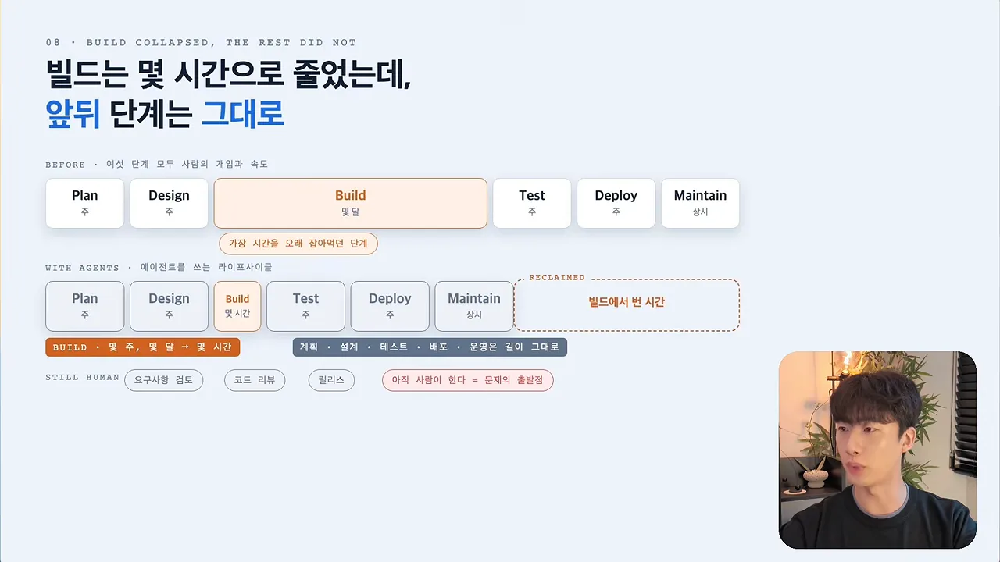
리뷰가 못 따라가요
사람이 직접 타이핑한 코드라면 한 줄씩 리뷰하는 게 맞았어요. 하지만 diff 대부분을 에이전트가 쓰면 그 방식이 버티지 못해요. 슬라이드 왼쪽처럼 개발자 세 명이 각자 Claude Code로 하루에 PR을 수십 개 올려도, 리뷰어는 같은 세 명이에요. 결과는 아래 두 상자 중 하나예요. 머지 대기열이 쌓이거나, 급하니까 대충 보고 머지해요.
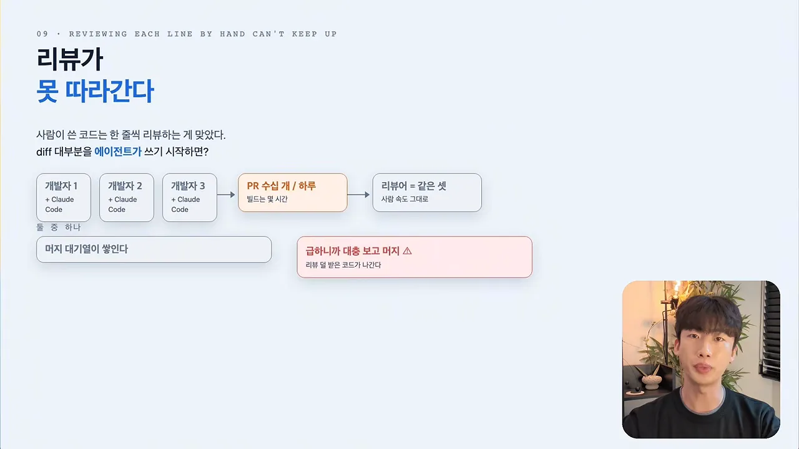
그래서 Anthropic의 결론은 이래요. 빌드 단계가 에이전트 덕에 바뀐 만큼 앞뒤 단계도 바뀌어야 하고, 그 첫 단추가 intent.md예요. 발표자도 6월에 '의도가 중요하다'는 글을 썼다고 해요. 코드는 남지만 의도는 남지 않아서, 코드 리뷰가 의도를 해석하는 일이 되어 버린다는 내용이에요.
단계는 같고, 흐름이 달라요
플레이북의 그림을 보면 차이가 한눈에 보여요. 왼쪽 전통 방식은 Plan부터 Maintain까지 위에서 아래로 한 줄로 흐르고, 한 바퀴가 릴리스 한 번이에요. 오른쪽 AI 네이티브 방식은 단계 이름은 같지만, 가운데 Claude를 두고 여섯 단계가 원을 그리며 돌아요.
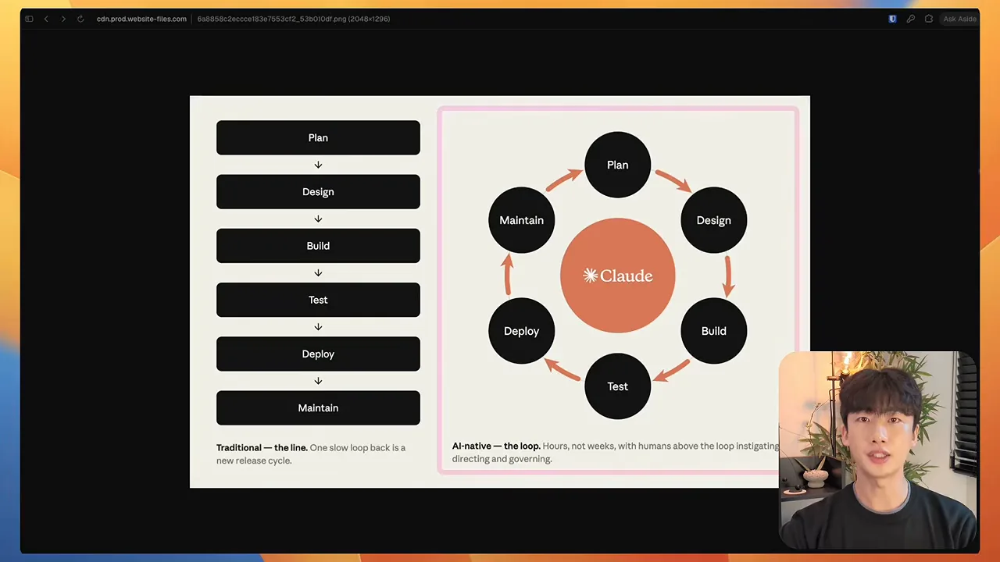
발표자가 다시 그린 슬라이드는 여기에 표시를 더했어요. 오른쪽 원의 단계마다 붙은 파란 'AI' 배지가 '루프의 모든 지점에 AI가 개입한다'는 뜻이에요. 맨 아래 문장이 다음 내용의 예고예요. 차이는 각 단계에서 무엇이 남느냐에서 생겨요.
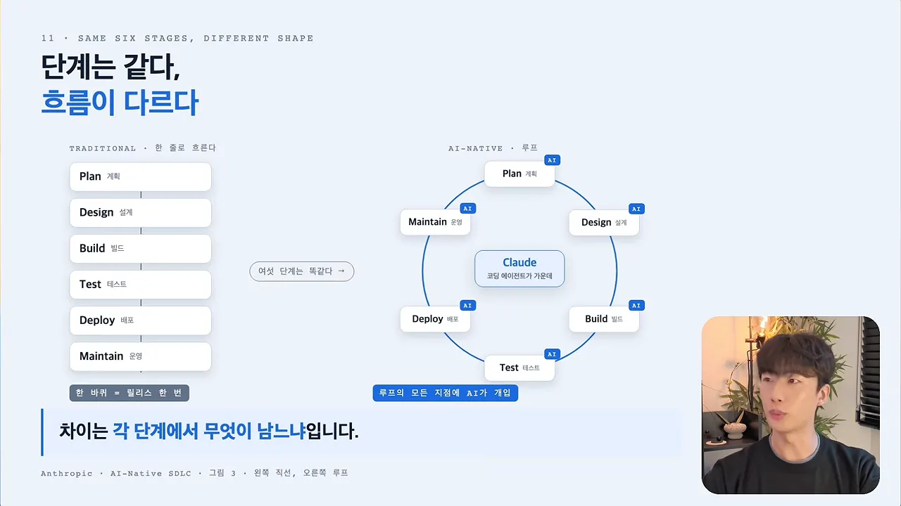
여섯 단계에서 달라지는 것
발표자는 여섯 단계를 하나씩 '예전'과 '지금'으로 나눠 보여 줘요. 먼저 한 표로 모아 보면 이래요.
| 단계 | 예전 | 지금 | 남는 것 |
|---|---|---|---|
| 계획 | 기획자가 요구사항을 모으고 회의 여러 번, 기획서를 손으로 씀 | 아이디어 낸 누구든 Claude와 대화 | intent.md |
| 설계 | 기획서 → 피그마 → 구현, 넘길 때마다 해석 | Claude 한 세션에서 요구사항·설계 스펙, 목업까지 | spec.md |
| 빌드 | 개발자가 손으로 코드 작성 | 코드도 테스트도 에이전트가, 병목은 규칙을 아느냐 | plan.md, 코드 |
| 테스트 | 신호가 몇 분·며칠·몇 주 뒤에 옴 | 세션이 스스로 테스트·빌드·브라우저 검증 | diff와 테스트 |
| 배포 | 사람이 PR을 한 줄씩 봄 | 에이전트 리뷰 여러 겹, 사람은 위험한 코드만 | PR과 리뷰 기록 |
| 운영 | 새벽 알림 놓침, 티켓은 백로그로 | 지표 감시 스크립트가 에이전트 호출 | 장애 회고 |
① 계획: 누구든 Claude와 대화해 intent.md로
위 줄이 예전 흐름이에요. 기획자가 대표·영업·CS(Customer Service)에게 요구사항을 받아 오고, 회의를 여러 번 돌리고, 컨펌을 받은 뒤 노션 기획서를 손으로 썼어요. 아래 줄에서는 고객 문의나 CS 티켓을 든 사람 누구나 Claude와 대화하고, Claude가 intent.md를 만들어요. 파란 띠의 말처럼 이 파일은 사람도 읽고 에이전트도 읽어요.
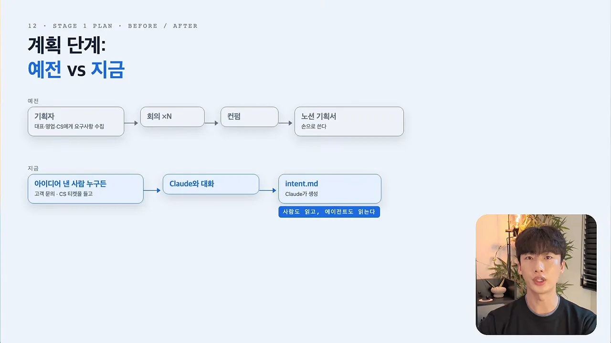
② 설계: 한 세션에서 스펙과 목업까지
예전 줄의 화살표마다 '해석'이라는 글자가 붙어 있어요. 기획서를 디자이너가 읽고 피그마로 옮기고, 개발자가 피그마를 보고 구현할 때마다 해석이 한 번씩 들어갔어요. 지금 줄에서는 기획자가 intent.md를 던지면 Claude 한 세션에서 요구사항과 설계 스펙을 뽑고, 프론트엔드라면 Claude Design으로 목업까지 만들어요.
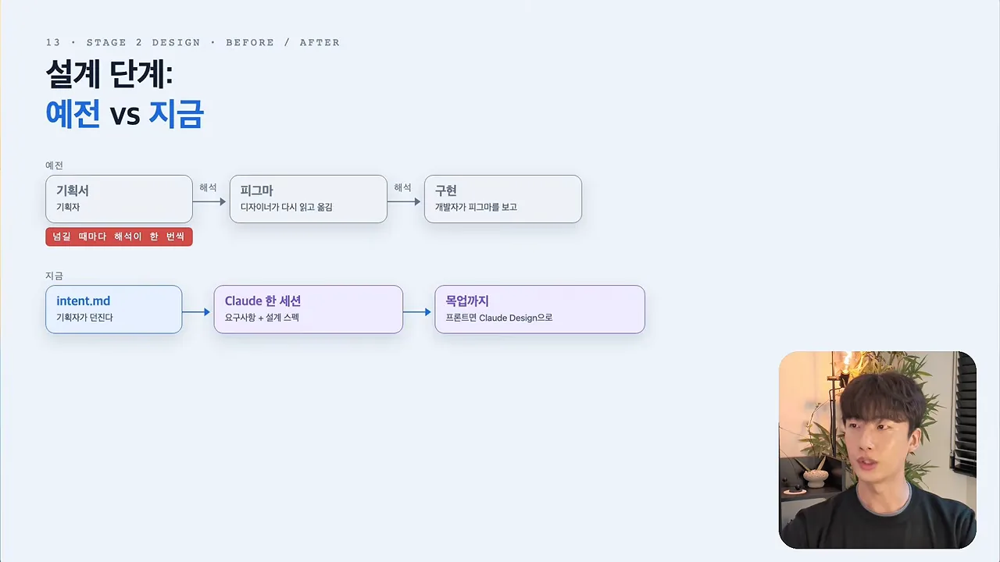
회사만의 브랜딩, 디자인 시스템, 규칙은 오픈 표준인 스킬로 Claude에게 넣어요. 설계 결과물도 레포에 커밋하면서 이 단계가 끝나요.
③ 빌드: 병목은 '규칙을 아느냐'
코드도 테스트도 에이전트가 만드니까 코드 작성 자체는 더 이상 병목이 아니에요. 가운데 파란 글자처럼 이제 병목은 '우리 팀의 규칙을 AI가 알고 있느냐'예요. 왼쪽 'RULES' 상자의 CLAUDE.md·AGENTS.md에는 빌드·테스트 명령, 컨벤션, 아키텍처를 쌓아요. 오른쪽 'SKILL' 상자에는 팀 전체에 똑같이 적용할 기준, 예를 들면 API(Application Programming Interface) 보안 리뷰 기준을 둬요.
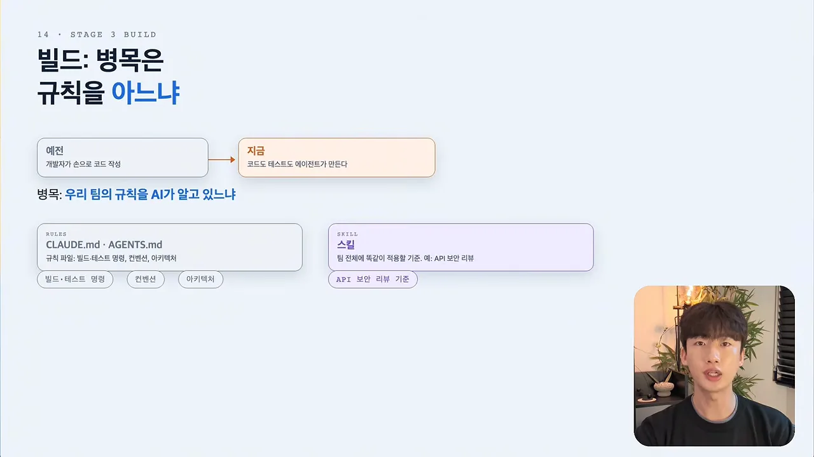
④ 테스트: 신호를 앞당겨요
윗줄 태그가 예전 신호의 속도예요. CI(Continuous Integration)는 몇 분 뒤, 테스터는 며칠 뒤, 실사용은 몇 주 뒤에 결과가 왔어요. 에이전트가 코드를 쏟아내는데 신호가 늦게 오면 사람이 일일이 확인해야 하니 사람이 병목이 돼요. 아랫줄에서는 Claude가 구현하면서 테스트를 쓰고 돌리고, 빌드하고, UI(User Interface) 작업이면 브라우저를 띄워 스크린샷·목업과 비교해요.
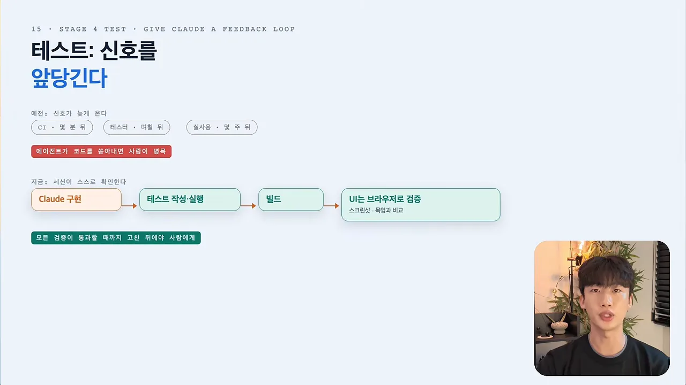
여기에 TDD(Test-Driven Development) 규칙을 넣을 수 있어요. 실패하는 테스트를 먼저 만들고('RED'), 그걸 통과하는 최소한의 코드를 쓰고('GREEN'), 마지막에 정리해요('REFACTOR'). 그런데 가운데 빨간 상자처럼 에이전트가 TDD를 우회해서 테스트 코드를 고쳐 통과시키는 일이 생겨요. 그래서 아래 초록 상자처럼, 파일을 편집하는 동안에는 테스트 코드를 절대 수정할 수 없게 막는 프로텍션 훅을 달아요.
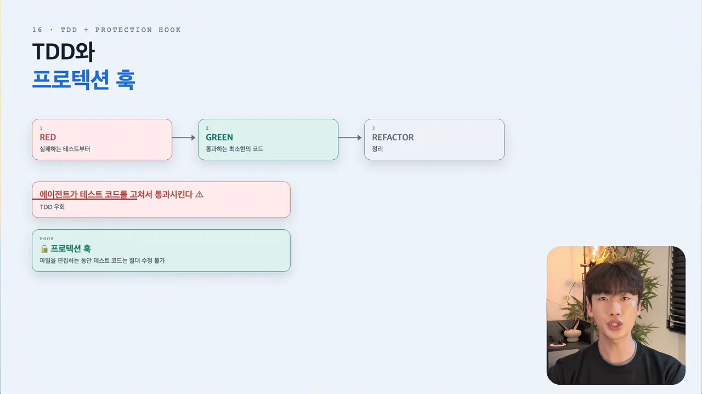
Anthropic이 테스트 단계에서 특히 강조하는 건 코드만 테스트하지 말라는 점이에요. 에이전트의 규칙이나 스킬이 바뀔 때도 테스트해야 해요. 왼쪽 코드가 그 예시인 .github/workflows/agent-evals.yml이에요. 파란 줄의 paths처럼 CLAUDE.md나 .claude/ 아래가 바뀐 PR에서 돌고, 매일 새벽 2시에도 한 번 돌아요. 아래쪽 반복문은 evals/*.json에 쌓아 둔 과제마다 claude -p를 실행하고 check.sh로 채점해요.
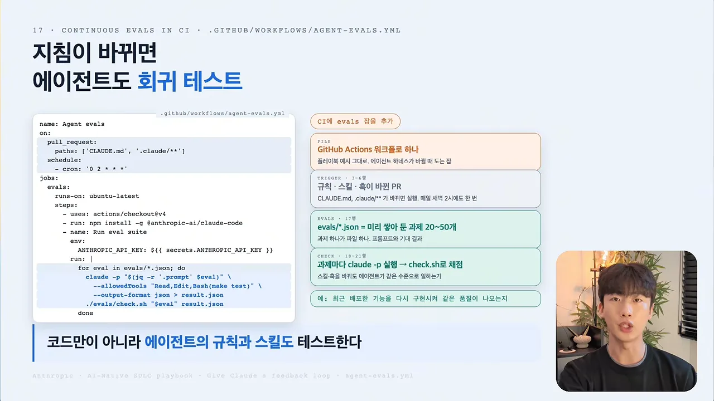
⑤ 배포: 사람은 위험한 코드만
왼쪽 '예전' 상자 아래 빨간 태그처럼, 사람이 PR을 한 줄씩 볼 때는 리뷰 품질이 리뷰어 컨디션에 따라 들쭉날쭉했어요. 오른쪽 '지금'은 에이전트 리뷰를 여러 겹 돌리고, 사람은 결제·인증처럼 위험한 코드만 봐요. 아래 초록 상자가 또 하나의 변화예요. 보안·배포 정책 위반은 나중에 리뷰에서 잡지 않고, AI가 파일을 고치는 순간 훅이 잡아요.
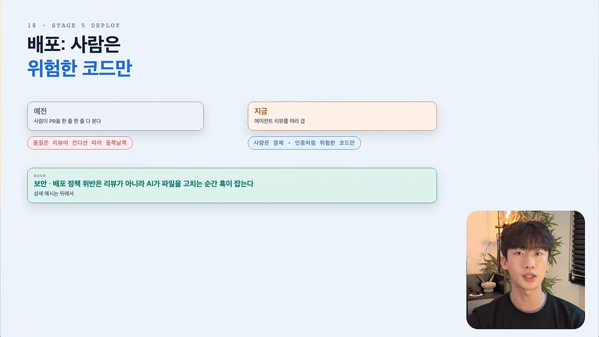
⑥ 운영: Claude가 들어오는 세 길
왼쪽 위 태그 세 개가 예전 운영의 모습이에요. 새벽 알림은 놓치고, 티켓은 백로그에 묻히고, 장애 회고에서 나온 재발 방지 작업은 다른 불을 끄느라 코드까지 못 갔어요. 이제 Claude가 들어오는 길은 번호가 붙은 세 상자예요.
- 지표 감시 스크립트 — CI 실패율, 배포 후 500 에러, PR 사이클을 주기적으로 보다가 기준을 넘으면 에이전트를 호출해요. 감지는 LLM(Large Language Model) 없이 결정론적으로 하고, 로그만 남기기 → 읽기 전용 진단 → 그다음 행동처럼 권한을 단계적으로 높여요.
- Claude Security — 레포를 주기적으로 스캔해요.
- Claude Tag · Slack — Claude를 장애 채널에 초대해 두면 장애 요청이 들어왔을 때 첫 대응을 맡아요. 해결한 회고는 마크다운으로 만들어 레포에 푸시해서 히스토리로 남겨요.
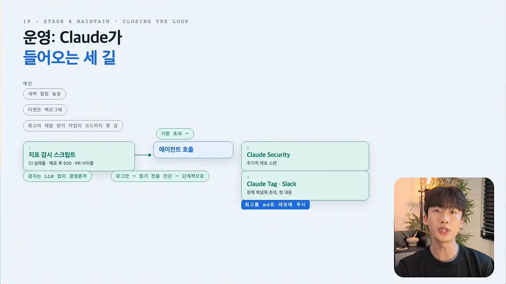
초안은 에이전트, 승인은 사람
여섯 단계에는 모두 Claude가 들어가서 결과물의 초안을 만들어요. 그리고 각 단계는 다음 단계가 읽을 수 있는 결과물을 하나의 레포에 커밋해요. 이 파일들이 계속 쌓이는 구조를 만드는 게 핵심이에요.
슬라이드의 점선 상자('ONE REPOSITORY') 안을 왼쪽부터 읽으면 돼요. 계획은 intent.md(왜 만드나), 설계는 spec.md(무엇을 어떻게), 빌드 직전은 plan.md(Claude Code 플랜 모드), 빌드·테스트는 코드 diff와 테스트, 배포는 PR과 리뷰 기록, 운영은 장애 회고예요. spec.md 위의 'PO 승인 후 다음으로' 표시처럼, spec을 PO가 승인해야 개발자가 plan.md를 만들기 시작해요.
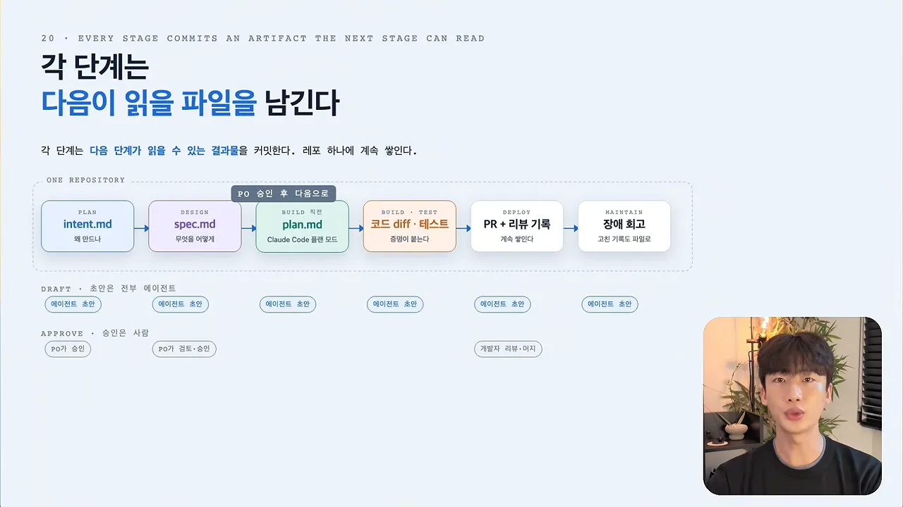
아래 두 줄이 역할 분담이에요. 초안은 전부 에이전트가 쓰고, 승인은 사람이 해요. intent 파일은 에이전트가 초안을 만들고 사람이 승인해요. 그 intent를 바탕으로 spec 초안도 에이전트가 만들고, 검토·승인은 사람이 해요. 에이전트가 모든 단계에 개입해서 단계를 넘기는 속도를 높이고, 사람의 승인으로 신뢰도를 지켜요.
판단이 필요한 결정은 전부 사람이 책임을 질 수 있는 구조를 만들어야 된다
— 영상 18:13
다음 슬라이드의 한 줄이 이걸 짧게 정리해요. 자동화되는 건 결과물이지 책임이 아니에요.
intent.md 가볍게 시작하기
intent.md는 의도를 전달하는 파일이니까 개발자가 쓰는 파일이 아니에요. 의도를 가진 누구나 쓸 수 있어야 해요. 기획자든 PM(Product Manager)이든 CS 담당자든, AI와 대화하면서 intent.md를 쓸 수 있는 구조를 세팅하면 돼요. 첫발은 가볍게 떼요. 템플릿 하나를 만들어 팀 전체와 공유하고, Claude에게 그 템플릿을 넣은 뒤 의도를 말로 설명하기만 해도 시작할 수 있어요.
Claude가 되물으며 의도를 또렷하게 해요
맨 위 회색 말풍선이 사람이 처음 꺼낸 말이에요. '고객이 배송 상태를 자꾸 채팅으로 물어봐서 CS 시간이 낭비돼요.' 그 아래 파란 말풍선 두 개가 Claude의 되물음이에요. 배송 상태만 그런지, 예상 도착일도 필요한지. 고객만 그런지, 입점 판매자도 영향을 받는지. 막연한 불편이 이 대화를 거치며 intent.md의 각 칸에 들어갈 내용이 돼요.
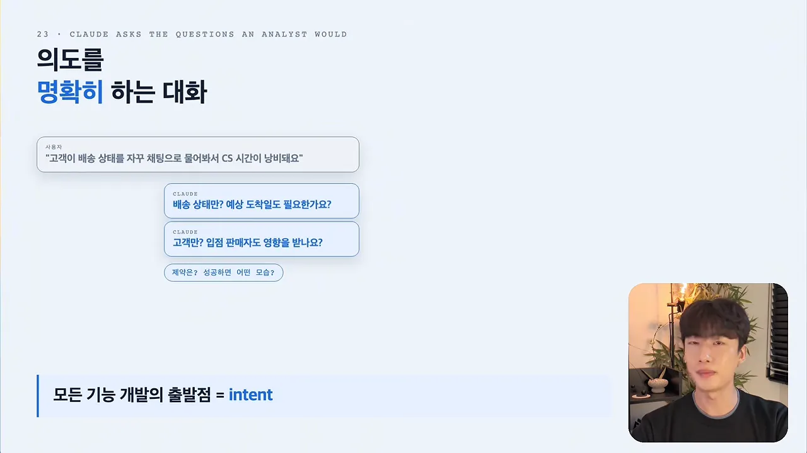
그래서 초안은 코드베이스를 모르는 사람도 누구든 만들 수 있게 설계해요. 슬라이드의 흐름처럼, 누구든지 Slack에서 또는 템플릿과 함께 Claude와 대화해 intent.md 초안 한 장을 뽑아요. 그 초안을 검토·수정·승인하는 건 팀의 PO예요.
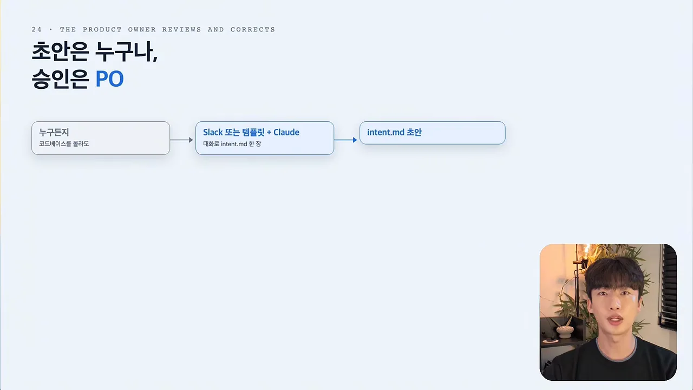
사람 없이 시작되는 경로
가볍게 시작했으면 다음은 자동화예요. 위쪽 회색 태그 세 개가 이벤트예요. 티켓 등록, Slack에서 에이전트 호출, 지표 범위 이탈. 이런 이벤트가 생기면 에이전트가 진단하고, 사람 개입 없이 intent 초안을 만들어요. 오른쪽 끝 보라 상자처럼 승인은 여전히 PO의 몫이에요.
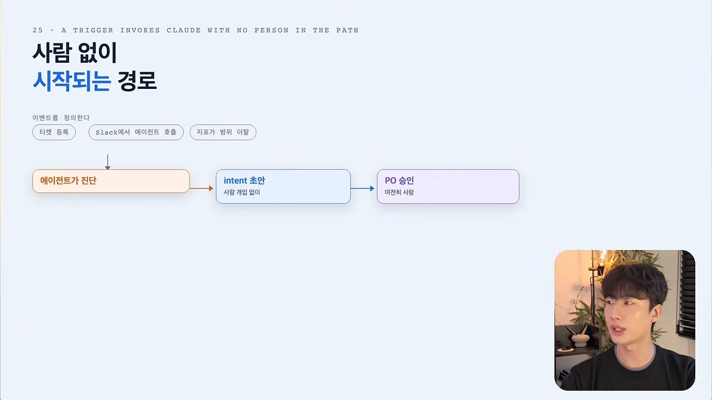
이 구조는 팀의 개발자 한 명이 딱 한 번만 설계하면 돼요. 슬라이드의 세 상자 순서대로예요. 레포에 intent/ 폴더를 만들고 권한을 정하고, 이해관계자 누구나 Claude로 초안을 만들게 하고, PO가 승인하는 시스템을 만들어요. 승인되면 아래 트리처럼 intent/<slug>/intent.md가 '승인됨' 상태로 쌓여요. 여기까지가 계획 단계예요.
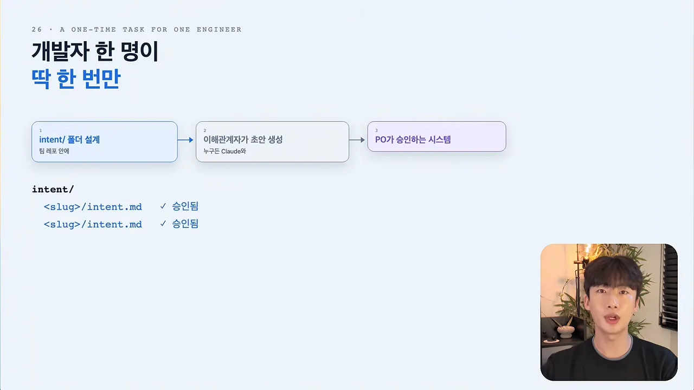
파일 네 개, 누가 쓰고 누가 승인하나요
AI 네이티브 SDLC로 개발할 때 손에 쥐게 되는 파일은 네 개예요. 표의 열은 왼쪽부터 파일, 답하는 질문, 초안을 쓰는 쪽, 승인·책임을 지는 쪽, 비고예요. 파란 칸과 초록 칸이 승인 주체가 바뀌는 지점이에요.
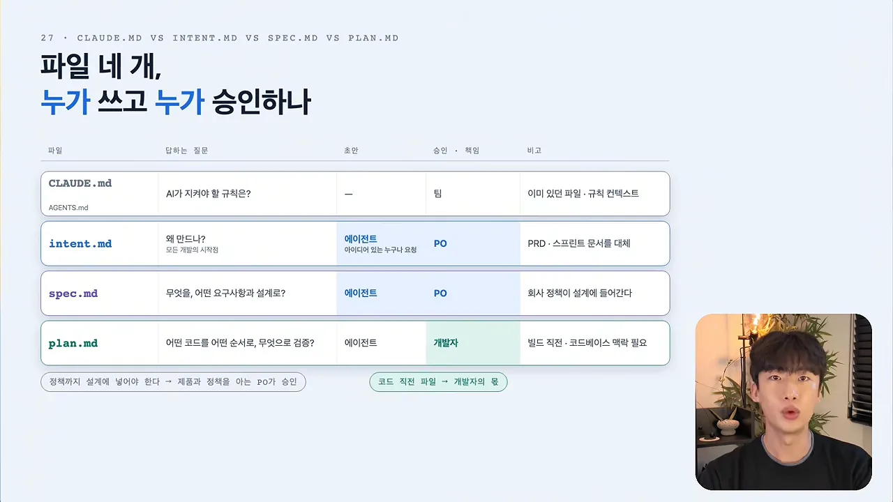
CLAUDE.md·AGENTS.md— 이미 다들 쓰는 규칙 파일이에요. AI에게 지켜야 할 규칙의 맥락을 넣어 줘요.- intent.md — 모든 개발의 시작점이에요. PRD나 스프린트 문서를 어느 정도 대신할 수 있어요. 아이디어를 낸 누구든 작성자가 되고, 그 의도를 승인하는 건 PO예요.
- spec.md — intent.md가 '왜 만드나'라면 spec.md는 '그래서 무엇을, 어떤 요구사항과 설계로 만드나'예요.
- plan.md — 개발자가 빌드 직전에 쓰는 파일이에요. 어떤 코드를 어떤 순서로 바꾸고 무엇으로 검증할지 적어요. 이 단계에서는 코드베이스의 맥락이 필요해요.
intent.md와 spec.md는 단순히 요구사항만 적는 파일이 아니라 회사 정책을 설계에 녹이는 파일이에요. 그래서 코드만 아는 사람이 아니라 제품과 정책을 아는 PO가 승인해요. 반대로 코드 바로 앞 단계의 파일은 개발자 몫이에요. 영상 24:25에서 발표자는 이 대목을 '스펙.md는 개발자의 몫'이라고 말하지만, 화면의 표와 앞뒤 설명으로 보면 plan.md를 가리켜요.
슬랙 태그 한 번에서 기능 PR 머지까지
발표자는 플레이북을 바탕으로 AI 네이티브 SDLC 전체 구조를 직접 그려 봤어요. 새 엔지니어링 조직을 설계하거나, 기존 개발 프로세스를 AI 네이티브로 바꾸고 싶을 때 참고하라고 해요. 원칙은 두 가지예요. 도구를 최대한 적게 쓰고, 모든 지식의 원천을 레포 하나에 모으는 SSOT(Single Source of Truth)를 지켜요.
슬라이드 왼쪽 아래 태그가 그 원칙이에요. 'SSOT · 지식의 원천은 레포 하나', 외부 도구는 GitHub·Slack·Claude 셋뿐이에요. Jira나 Confluence 같은 외부 서비스는 쓰지 않아요. 가운데 굵은 가로줄이 팀이 진실로 삼는 main 브랜치이고, 그 위에서 'PO 머지'가 두 번 일어나요.
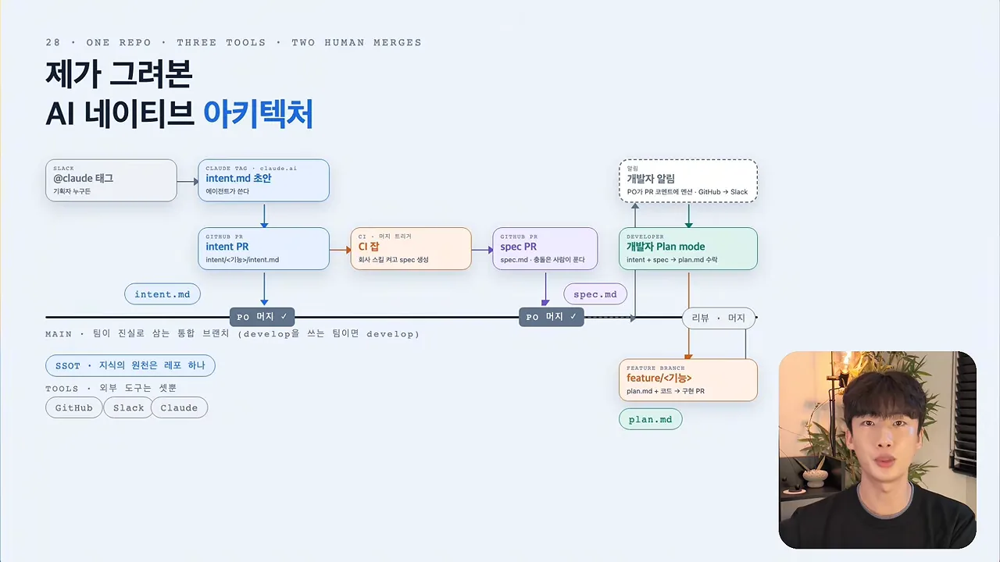
한 바퀴를 순서대로
슬라이드에서는 상자가 위아래로 흩어져 있어서 순서를 놓치기 쉬워요. 발표자가 말로 짚은 순서대로 세로로 다시 그리면 이래요. 사람이 손대는 곳은 PO 머지 두 번, plan 확정, 코드 리뷰예요.
flowchart TD A["Slack에서 @claude 태그
소스: 아이디어·버그 티켓·장애 로그"] --> B["에이전트가 intent.md 초안"] B --> C["intent PR
intent.md 파일 하나만"] C -->|"PO 머지 = 승인"| D["CI 잡이 돌며 spec.md 초안"] D --> E["spec PR
spec.md 파일 하나만"] E -->|"PO 머지 = 승인"| F["담당 개발자에게 알림
GitHub 멘션 → Slack"] F --> G["에이전트가 intent+spec으로 plan.md 초안
개발자가 코드베이스 맥락으로 확정"] G --> H["에이전트가 구현·테스트·검증"] H --> I["feature 브랜치 PR"] I -->|"코드 리뷰 후 머지"| J["main"]
몇 군데를 더 짚어요. intent 초안은 에이전트가 만들지만 바로 승인되지 않아요. 중요한 결정은 사람이 승인해야 하니까, 발표자는 intent만 담은 PR을 하나 올리고 PO가 검증해서 머지하는 방식을 택했어요. 머지되면 CI 잡이 자동으로 돌아 spec 초안을 만들고, 다시 spec.md 하나만 담은 PR을 올려요. 개발자는 앞에서 생긴 산출물 두 개(intent, spec)를 받아서 plan.md를 완성해요.
완성된 슬라이드에는 맨 아래 한 줄 요약이 붙어요. Slack → intent PR → CI → spec PR → 알림 → plan.md → feature PR, 그리고 '승인 두 번은 사람'.
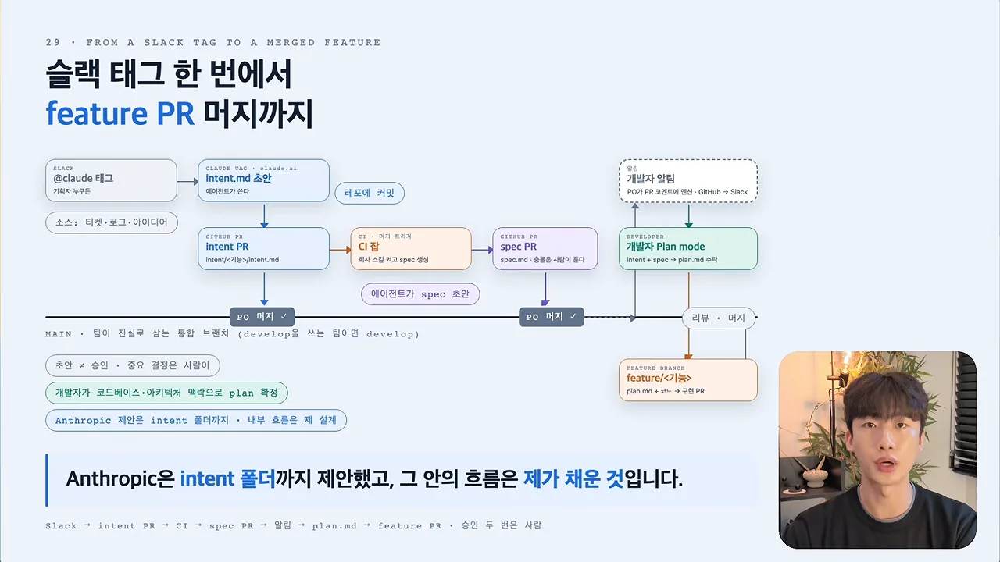
실제 프로젝트에 적용한 모습
발표자는 자기 프로젝트(cutzal)에 이 구조를 실제로 붙인 모습을 보여 줘요. 프로젝트 루트에 intent/ 폴더가 있고, 여기까지가 Anthropic이 제안한 부분이에요. 모든 개발이 의도에서 시작하니까, 이 폴더를 먼저 루트에 만들면 돼요.
왼쪽 파일 트리의 빨간 상자 안이 intent/ 아래의 슬러그 폴더들이에요. audio-stem-export, byo-engine-connection, ci-test-gate, export-output-check, export-output-selection처럼 의도 하나가 폴더 하나예요. 오른쪽에 열린 파일이 그중 하나의 intent.md로, 제목이 'Intent: 내보낼 파일을 하나씩 고른다'예요.
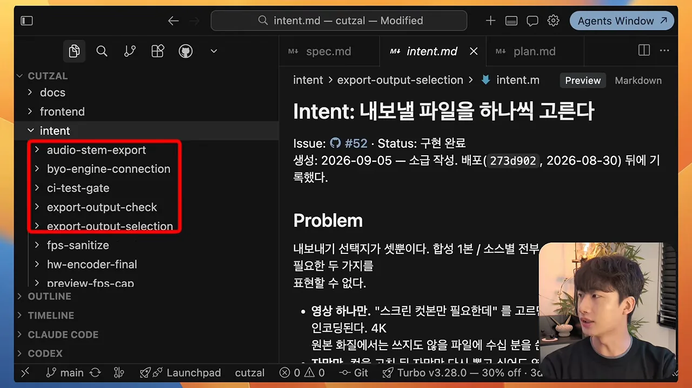
intent.md와 spec.md 안쪽
발표자의 intent.md는 다섯 칸 템플릿에 Success criteria(성공 기준)를 하나 더한 형태예요. 화면의 Constraints에는 네 줄이 있어요. 기본값은 종전과 같아야 한다, 하나만 골라도 파일명이 바뀌지 않는다, 자막만 고르면 인코딩 없이 끝나야 한다, 옛 3택 호출은 계속 동작해야 한다(하위호환). 맨 아래 '범위 밖: 내보내기 속도, 화질 옵션'처럼 하지 않을 것도 적어 둬요.
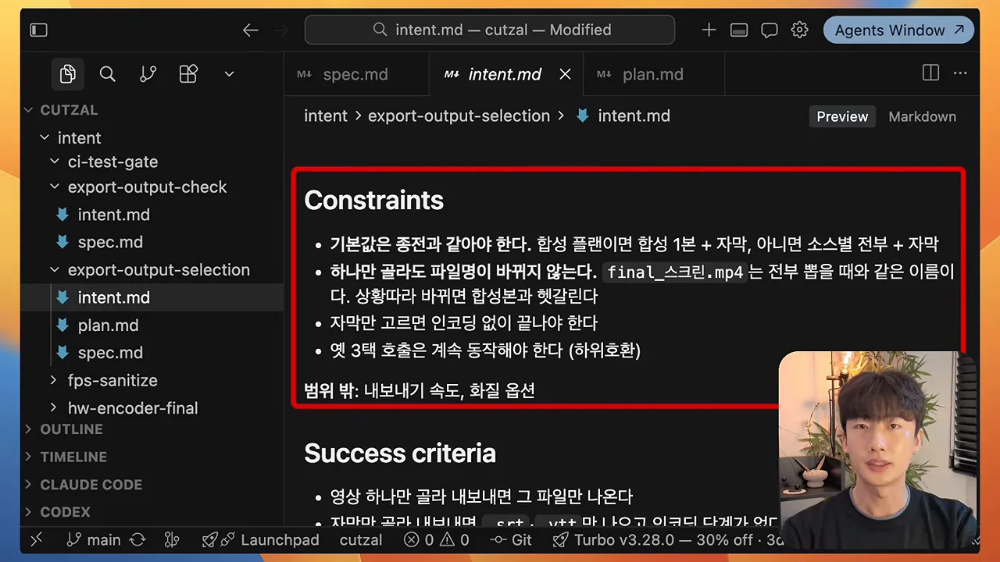
같은 폴더의 spec.md는 그 의도를 요구사항과 설계, 결정으로 풀어요. 제목은 'Spec: 내보내기 항목 개별 선택'이고, 위쪽에 연결된 intent.md와 이슈 번호가 링크돼 있어요. 요구사항은 R1부터 R6까지 번호를 붙여 적어요. 합성 1본·소스별 각각·자막을 독립적으로 켜고 끈다, 기본값은 종전 동작과 같다 같은 식이에요.
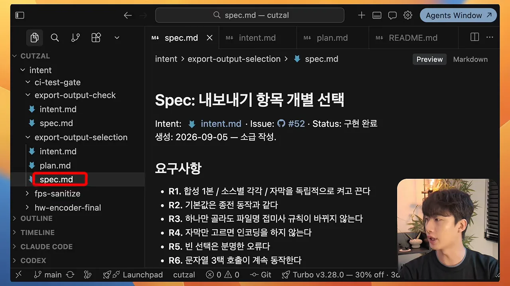
PR로 승인받기
intent를 처음 만들어 승인받는 길은 GitHub PR이에요. 화면은 'intent: 컷잘의 모든 기능을 채팅으로도 쓴다' PR이에요. 브랜치는 intent/ai-chat이고, 본문 첫 줄에 '머지가 승인입니다. 머지되면 spec/ai-chat PR이 자동으로 뒤따릅니다'라고 적혀 있어요. Files changed 1처럼 이 PR에는 intent.md 하나만 들어 있어요.
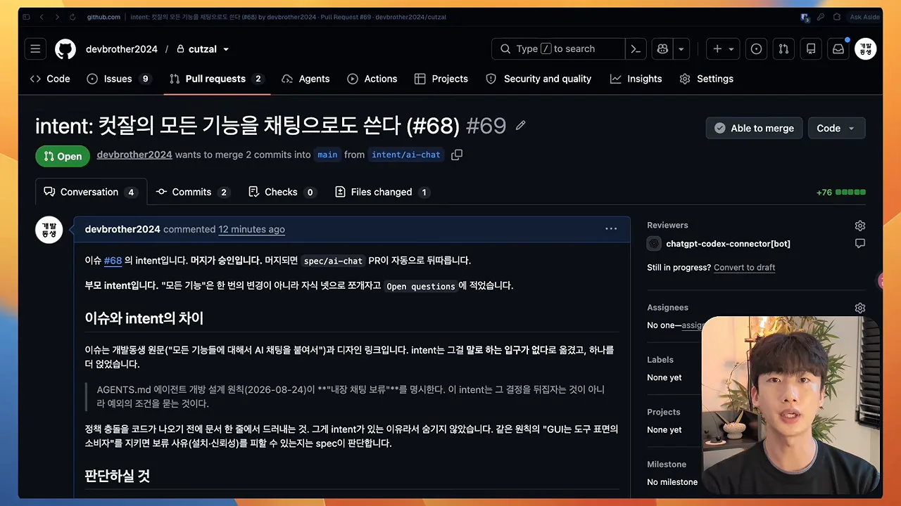
Slack에서 에이전트에게 의도를 설명하고 'intent 만들어 줘'라고 하면 이런 PR이 올라가요. 담당자가 검토해서 머지하면 그게 승인이에요. 그다음 에이전트가 intent.md를 참고해 spec/… 브랜치로 spec PR을 올려요. 아래 화면의 'spec: BYO 판정 엔진 연결 계층' PR도 intent/byo-engine-connection/spec.md 파일 하나만 담고 있고, 요구사항 R1~R9가 보여요.
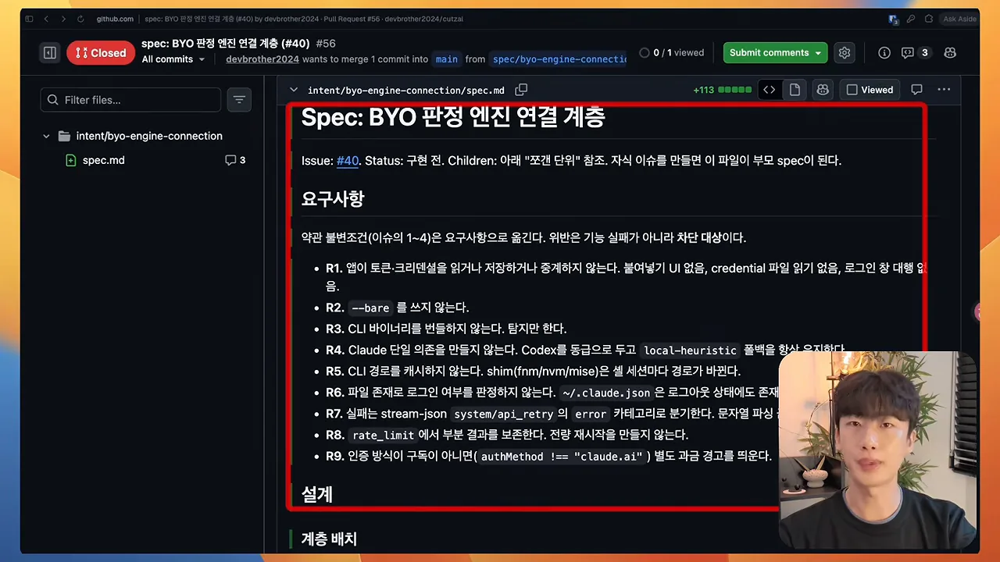
spec까지 PO가 승인하면 개발자가 로컬에서 Claude Code, Cursor, Codex 같은 코딩 에이전트로 plan.md를 만들어요. 화면의 plan.md는 제목 아래에 연결된 spec.md 경로가 있고, '바뀌는 파일' 절에 src/main/judge/ 아래 새로 생길 파일(provider.ts, detect.ts, auth.ts, errors.ts)과 각 파일의 역할을 적어요. 여기부터는 평소 개발 흐름과 같아요.
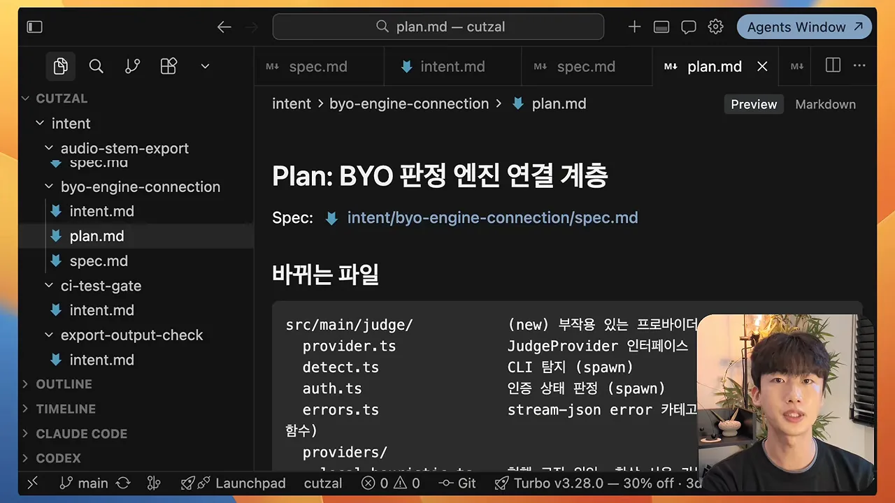
폴더당 하나씩, 필요한 것부터
폴더 하나에 intent·spec·plan은 하나씩
전체 레포 구조는 intent/ 아래 의도 단위 폴더가 있고, 폴더마다 intent.md, spec.md, plan.md가 하나씩 있는 모양이에요. 여기서 중요한 규칙은 폴더당 하나씩이라는 점이에요. 왼쪽 트리에서 줄이 그어진 spec-2.md가 바로 하지 말아야 할 모양이에요. spec이 두 개 필요해 보이면, 오른쪽처럼 intent를 subtitle-cut-text/와 subtitle-style/ 두 개로 나눠야 해요.
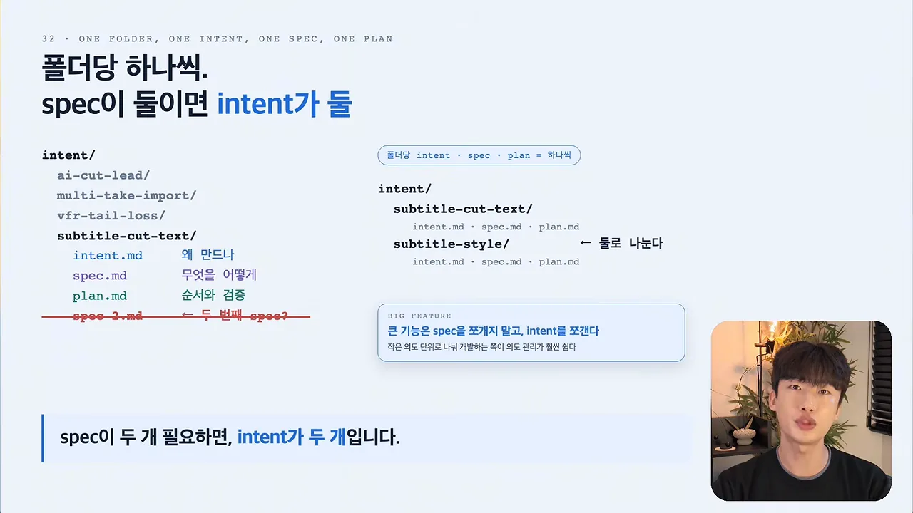
한 번에 말고, 필요한 것부터
레거시 개발 프로세스의 잔재를 한 번에 다 바꾸려고 하면 어려워요. 필요한 것부터 하나씩 단계적으로 들여오는 게 좋아요. 슬라이드 가운데 태그 세 개가 intent를 쓰지 않아도 되는 경우예요. 오타 수정, 작은 버그, 뭘 해야 하는지 명확한 작업은 바로 고치는 편이 효율적이에요.
아래 두 상자는 상황별 출발점이에요. 혼자 개발한다면 큰 기능을 시작할 때만 intent를 먼저 쓰고 의도를 쌓아 가요. Jira 같은 기존 도구를 쓰는 조직이라면, 결과물마다 원본이 어디 있는지 링크를 거는 것부터 작게 시작할 수 있어요.
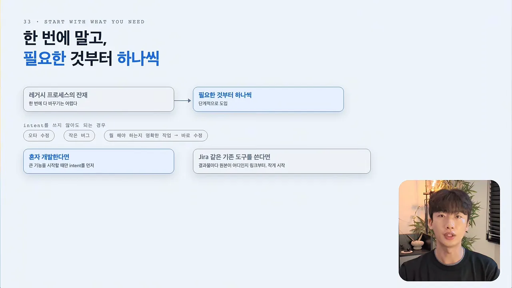
정리
발표자는 이 방식이 아직 업계 표준으로 자리 잡은 건 아니라고 다시 강조해요. Anthropic에서 기업 고객의 AI 도입을 돕는 팀이 고객사와 매일 실제로 쓰는 방식을 녹인 가이드라는 거예요. 정리 슬라이드의 두 카드가 영상의 결론이에요. 하나는 AI를 쓰면서 의도를 전달하는 일이 중요해졌다는 것이고, 다른 하나는 모든 단계에서 AI가 초안을 만들고 사람은 필요한 곳만 승인하는 시스템을 만드는 것이에요.
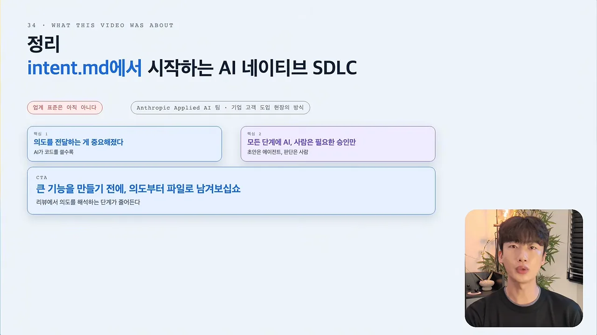
의도를 쌓는 구조가 잘 잡히면, AI로 많은 코드를 만들어도 그 코드를 리뷰하면서 의도를 해석하는 단계를 줄일 수 있어요. 발표자가 이 방향성을 훌륭하다고 평가하는 이유예요.